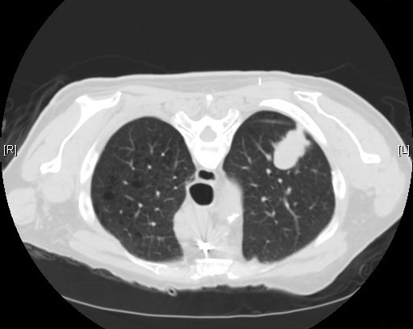

Executive Summary
9월 중순 네이처 메디신에 실린 I3LUNG 연구는 유럽 다섯 나라와 미국의 여섯 기관에서 면역항암제를 받은 진행성 비소세포폐암 환자 2,396명을 모았다. 진료 기록과 혈액 검사만 쓴 설명가능 AI가 PD-L1, ECOG 활동도, LDH 같은 기존 지표를 모두 유의하게 앞섰다. 그 비교가 이뤄진 자리는 학습에서 떼어 둔 독립 세트였고, 미국의 다른 기관에서는 모델의 성적 자체가 한 단계 내려갔다. 이 글은 그 성과가 아니라, 같은 논문 안에서 검증의 칸을 끝까지 채우지 못한 쪽을 본다.
보도자료가 앞세운 수는 0.88이다. CT 영상과 디지털 병리를 얹은 모델이 1차 치료 환자의 24개월 생존을 맞힐 때 나온 값이고, 같은 조건에서 진료 기록과 혈액만 쓴 모델은 0.68이었다. 그런데 이 비교가 이뤄진 자리는 모델을 만드는 과정의 교차검증이다. 논문은 이 향상이 독립 세트에서 일관되게 재현되지 않았다고 결과 절과 논의 절에 각각 적었다.
1절부터 4절까지는 논문과 보도자료에 적힌 것을 따라간다. 5절에서 이 결과를 조직의 데이터 투자 문제로 옮겨 읽는 대목은 논문에 없는 이 글의 해석이다.
주요 수치
출처: Nature Medicine 게재 논문(2026) 본문 및 시카고대 의료원 보도자료(2026-09-14).
339명
네 종류 자료를 모두 갖춘 환자
진료·혈액, CT, 디지털 병리, 유전체를 전부 가진 사람. 모집한 2,396명의 14%다
0.68 → 0.88
영상·병리를 얹었을 때 오른 폭
1차 치료군의 24개월 생존 예측. 같은 소수 환자군에 맞춘 두 모델을 교차검증에서 견준 값이다
0.72 → 0.87
의사 20명의 반응자 판별 민감도
AI 예측과 설명을 함께 본 뒤 오른 값. 이 실험에 쓴 모델에는 영상도 병리도 없었다
0.96과 0.63
기관에 따라 갈린 민감도
같은 모델이 그리스 기관에서는 0.96, 이탈리아 기관에서는 0.63이었다
한 논문에 나란히 적힌 두 문장
I3LUNG은 유럽연합 호라이즌 유럽이 지원하는 국제 공동 연구다. 이탈리아, 독일, 그리스, 이스라엘, 스페인의 다섯 기관과 미국 시카고대 의료원이 참여했고, 2012년 9월부터 2023년 10월까지 등록된 진행성 비소세포폐암 환자 2,396명의 실제 진료 데이터를 모았다. 저자들은 실사용 데이터를 쓴 국제 다기관 멀티모달 AI 연구로는 지금까지 가장 큰 규모라고 적는다. 분석에 쓴 코호트는 1차 치료군과 2차 이상 치료군을 합친 2,075명이고, 이를 학습 1,550명과 독립 세트 274명으로 나눈 뒤, 지리적으로 떨어진 미국 기관의 251명을 외부검증으로 따로 두었다.
먼저 확인된 쪽부터 보면 결과는 분명하다. 진료 기록과 혈액 검사만 쓴 설명가능 모델은 독립 세트에서 AUC 0.77까지 올랐다. AUC는 1에 가까울수록 잘 맞힌다는 뜻의 지표이고, 0.5는 동전 던지기다. 같은 환자들을 놓고 오늘 진료실에서 쓰는 지표들을 함께 재면 PD-L1이 0.53, ECOG 활동도가 0.62, LDH가 0.58, 호중구·림프구 비가 0.66이었다. 모델은 이들 전부를 통계적으로 유의하게 앞섰다. 다만 기존 지표와 맞붙은 자리는 독립 세트였다. 미국 기관의 외부검증 코호트를 두고 논문이 보고한 것은 모델 자신의 성적뿐이고, 그 값은 0.55에서 0.72 사이로 내려갔다. 가장 낮은 칸인 병 조절 예측은 0.55에 신뢰구간이 0.48에서 0.62여서 0.5를 품는다.
문제는 그다음 층이다. 연구팀은 여기에 CT 영상에서 뽑은 방사선 특징과 디지털 병리 이미지를 얹은 멀티모달 모델을 따로 만들어 비교했다. 보도자료가 인용한 0.88이 이 모델의 값이다. 그런데 같은 논문의 결과 절에는 이런 문장이 함께 있다. 멀티모달 모델의 향상은 독립 세트에서 일관되게 재현되지 않았고, 외부검증 코호트에서는 재현되는 정도가 들쭉날쭉했다는 것이다. 논의 절에서도 저자들은 같은 판단을 반복한다. 영상 계열 자료를 더하자 교차검증 모델의 성능이 AUC 0.88까지 올랐지만 그 이득은 독립 세트와 외부검증에서 일관되게 재현되지 않았고, 멀티모달 데이터가 제한적이었던 탓으로 보인다고 쓴다.
두 문장은 서로 모순되지 않는다. 가리키는 자리가 다를 뿐이다. 0.88은 모델을 만드는 동안 학습 데이터를 다섯 겹으로 접었다 펴며 잰 값이고, 재현되지 않았다는 판단은 그 모델을 처음 보는 환자들에게 들이댔을 때의 이야기다. 아래 도식은 두 모델이 각각 어느 칸까지 검증을 통과했는지를 같은 자리에 겹쳐 놓은 것이다.
0.88이 나온 자리는 독립 검증이 아니다
교차검증은 가진 데이터를 여러 조각으로 나눠 한 조각씩 돌아가며 시험지로 쓰는 방법이다. 모든 조각이 한 번씩 시험지가 되므로 적은 데이터로도 안정적인 추정치를 얻는다. 대신 그 조각들은 전부 같은 모집 과정을 거친 같은 환자 풀에서 나온다. 독립 세트는 다르다. 모델을 만들기 전에 봉인해 두고 마지막에 한 번만 여는 봉투다. 외부검증은 한 단계 더 가서, 애초에 다른 기관에서 다른 관행으로 쌓인 데이터를 가져다 댄다.
이 연구의 교차검증은 그중에서도 엄격한 축에 든다. 조각을 나눈 단위가 환자가 아니라 기관이어서, 학습 안에서도 한 기관을 통째로 빼고 배운 뒤 뺀 기관에 들이대는 시험을 이미 치렀다. 독립 세트로 넘길 때도 판정 문턱을 0.5로 고정한 채 손대지 않았다. 그러니 뒤에 나올 이야기는 개발 단계가 느슨해서 점수가 잘 나왔다는 이야기가 아니다.
멀티모달 모델을 왜 교차검증에서만 비교했는지는 논문에 나와 있다. 독립 세트의 규모가 작았기 때문이다. 이 설명은 짧지만 연구 설계의 가장 아픈 지점을 정확히 가리킨다. 멀티모달 비교는 필요한 자료를 전부 갖춘 환자만 쓸 수 있다. 진료 기록과 혈액에 CT와 디지털 병리까지 갖춘 환자는 400명이었고, 유전체까지 네 종류를 모두 가진 환자는 339명이었다. 모집한 2,396명의 14%다. 독립 세트 전체가 274명이니, 그 안에서 멀티모달 비교가 가능한 환자만 추리면 통계적 비교를 걸 만한 수가 남지 않는다.

[사실] 자료의 종류를 늘리면 모델이 볼 수 있는 항목은 늘지만, 그 모든 항목을 갖춘 환자의 수는 줄어든다. 2,396명에서 400명으로, 다시 339명으로 줄어든 것이 이 연구가 통과한 경로다. [해석] 데이터를 더 모은다는 말 안에는 성격이 반대인 두 작업이 섞여 있다. 사람을 더 모으는 일은 표본을 키우고, 한 사람에게서 더 많은 종류를 모으는 일은 완전한 표본을 줄인다.
비교의 바닥이 어디였는지도 함께 봐야 한다. 논문은 멀티모달 모델을 전체 코호트의 진료·혈액 모델이 아니라, 같은 소수 환자군으로 범위를 맞춘 진료·혈액 모델과 견줬다. 공정한 비교를 위한 선택이지만 그렇게 맞춘 바닥은 낮다. 전체 독립 세트에서 0.74였던 24개월 생존 예측이 이 소수 환자군의 교차검증에서는 0.60으로 내려앉는다. 환자군을 더 좁힐수록 격차는 더 벌어져서, 면역항암제를 단독으로 받은 환자만 추리면 0.91과 0.54가 맞붙는다. 0.54는 동전 던지기 옆자리다. 올라간 쪽이 얼마나 올랐는지만큼 내려간 쪽이 왜 내려갔는지를 같이 물어야 하는 대목이다.
논문이 이 비교에 붙인 이름도 분명하다. 해당 결과 절의 제목은 멀티모달 통합이 탐색적 이득을 보였다는 것이고, 초록은 추가 이득이 불확실하며 독립 세트와 외부검증으로 옮겨 가지 않았다고 밝힌다. 통계 방법 절은 한 걸음 더 나간다. 하위 그룹과 쌍대 비교를 워낙 많이 돌렸으므로 그 분석들은 전부 가설을 세우는 단계로 보아야 하고, 다중 비교 보정을 하지 않았으니 모든 p 값은 명목값이며, 일반화 가능성의 1차 증거는 독립 세트와 외부검증 결과라는 것이다. 0.88 옆에 붙은 p 값도 그 명목값 가운데 하나다.
모델 구조를 바꿔도 결과는 같았다. 연구팀이 돌린 두 계열 가운데 딥러닝 쪽은 다른 자료를 더해도 아무 이득을 보지 못했고, 논문은 이 판정을 모든 예측 대상과 모든 하위 그룹에서 일관되게 관찰했다고 적는다. 유전체 데이터는 결측이 많고 인코딩이 제각각이어서 성능에 기여하지 못했다. 병리 특징을 다른 파운데이션 모델로 다시 뽑아 본 추가 분석에서도 같은 패턴이 반복됐다. 저자들이 원인을 아키텍처가 아니라 데이터 쪽으로 돌린 근거가 이것이다.
논문이 직접 인용한 선행 멀티모달 연구들은 환자 수가 200~300명대였고 완전한 멀티모달 사례는 80명 안팎이었으며, 대부분 단일 기관 연구였다. AUC 0.80과 0.81이라는 좋은 수치를 보고했지만 독립 세트도 외부검증도 없었다. 같은 논의 절에 인용된 또 다른 연구는 조직 슬라이드만으로 반응을 예측했는데, 자기 데이터에서 0.75였던 값이 외부검증에서는 0.66이 됐다. 모달리티를 하나만 써도 기관을 옮기면 같은 모양의 하락이 나타난다. I3LUNG은 그 두 관문을 처음으로 통과시킨 대규모 연구이고, 바로 그 관문에서 멀티모달의 추가 이득이 사라졌다.
의사에게 쥐어 준 모델에는 영상이 없었다
이 연구에서 가장 널리 인용된 장면은 모델 성능표가 아니라 의사들을 앉혀 놓고 한 실험이다. 흉부종양 전문의 10명과 비전문의 10명, 모두 20명에게 실제 환자 100명의 자료를 줬다. 독립 세트에서 80명, 외부검증 코호트에서 20명을 뽑은 환자들이다. 1단계에서는 AI 없이 각자 병이 조절될지를 판단하게 하고, 2단계에서는 같은 환자들에 대해 AI의 예측과 그 예측의 근거 설명을 함께 보여 준 뒤 다시 판단하게 했다.
결과는 뚜렷했다. 반응자를 찾아내는 민감도가 0.72에서 0.87로 올랐고(p=0.0011), 정확도는 0.57에서 0.65로 올랐다(p=0.0431). 비전문의의 개선 폭이 전문의보다 컸다. 비전문의는 0.77에서 0.90으로, 전문의는 0.68에서 0.83으로 움직였다. 두 집단의 판단이 얼마나 일치하는지를 보는 카파 값은 0.11에서 0.48로 올라, 약한 일치에서 중간 일치로 넘어갔다. 전문 인력이 얇은 지역 병원일수록 도움이 크다는 해석이 여기서 나온다.
같은 문단에 나란히 적힌 것들도 있다. 민감도가 오른 대신 특이도는 조금 내려갔다. 판정 하나가 맞을 확률로 환산하면 상승 폭은 37%였는데 p 값이 0.1이어서 통계적으로 유의하지 않았다. 의사들은 AI의 옳은 제안을 74.5% 받아들였지만, 틀린 제안을 따라간 비율은 전문의 쪽이 72.2%로 비전문의의 63.6%보다 높았다. 생존 기간 예측에서 실제와 맞아떨어진 비율은 16.5%에서 22.5%가 됐다. 도구가 판단을 밀어 올린 방향은 분명하되, 밀어 올린 크기는 논문 안에서도 조심스럽게 적혀 있다.
그런데 이 실험에 들어간 모델이 무엇이었는지가 이 글의 주제와 곧장 맞물린다. 논문은 임상 유용성 실험을 설명하면서 한 문장을 못 박아 두었다. 이 연구에는 어떤 멀티모달 모델도 쓰이지 않았다는 것이다. 의사 20명이 화면에서 받아 본 AI 출력은 진료 기록과 혈액 검사만으로 돌아가는 회귀 계열 모델의 예측과 설명이었다. 영상 자체는 화면에 있었다. 100명 가운데 CT를 볼 수 있는 환자가 35명, 조직 슬라이드를 볼 수 있는 환자가 42명이었고 의사들은 두 단계 모두에서 그 자료를 함께 봤다. 없었던 것은 영상을 읽어 예측으로 바꿔 주는 쪽이었다.
3.1보도자료가 두 지표를 한 문장에 섞은 자리
시카고대 의료원 보도자료는 이 대목을 이렇게 옮겼다. AI 도구를 쓰자 반응자를 찾아내는 민감도가 AUC 0.72에서 0.87로 개선됐다는 문장이다. 민감도와 AUC는 다른 것을 재는 지표다. 민감도는 실제 반응자 가운데 몇 명을 찾아냈는지의 비율이고, AUC는 판정 문턱을 옮겨 가며 그린 곡선의 아래 넓이다. 논문에서 0.72와 0.87은 민감도이고, 보도자료는 그 앞에 AUC라는 이름을 붙였다. 같은 보도자료는 진료 기록과 혈액에 영상과 디지털 병리를 더한 모델이 0.88을 냈다고도 쓰는데, 그 값이 교차검증에서 나왔다는 사실과 독립 세트에서 재현되지 않았다는 사실은 함께 적지 않았다.
이 세 수치를 논문의 자리에 되돌려 놓으면 문장 하나가 만들어진다. 독립 세트와 외부 기관에서 기존 지표를 앞선 것도, 의사 20명의 판단을 실제로 끌어올린 것도, 값이 싸고 이미 병원에 쌓여 있는 자료만 쓴 쪽이었다. 값비싼 자료를 더한 쪽의 성적표에는 아직 개발 단계의 칸만 채워져 있다.
재현되지 않은 이유로 논문이 든 것들
외부검증에서 성능이 내려간 이유로 저자들이 먼저 꼽은 것은 인구 구성의 차이다. 미국 기관의 코호트는 여성 비율이 59%였는데 학습 코호트는 34.6%였다. 중앙 생존 기간도 22.2개월과 12.4개월로 갈렸다. 기저 특성과 치료 결과, 치료 양상 자체가 다른 환자 집단이라는 뜻이다. 모델이 배운 환자와 시험을 치른 환자가 같은 분포에서 나오지 않았다.
저자들은 같은 문단에서 단서를 하나 단다. 분포가 이렇게 어긋나면 예측 관계 자체는 그대로여도 변별 지표는 흔들릴 수 있다는 것이다. 성적이 내려갔다는 사실만으로 모델이 틀렸다고 단정할 수는 없다는 뜻이다. 완전한 자료를 갖춘 환자만 골라 쓰는 분석이 선택 편향을 부를 수 있다는 점도 논문이 먼저 적어 두었고, 그 편향을 따로 확인한 감도 분석에서는 체계적인 편향의 증거가 나오지 않았다고 밝힌다.
논문이 한계로 직접 적은 항목은 더 길다. 후향적 설계라 데이터가 실사용 환경 그대로의 이질성을 안고 있다는 점, 완전한 멀티모달 사례가 적어 그 부분의 신뢰도가 제한된다는 점, 쓴 모델 구조가 결측 데이터에 유연하게 대응하지 못한다는 점, 방사선 특징을 원발 병소에서만 뽑았다는 점, CT 스캔의 약 15%가 면역항암제 투여 시점을 기준으로 촬영된 것이 아니라는 점, 외부검증이 단일 코호트라는 점이 나란히 올라 있다.
기관 사이의 편차는 공정성 분석에서 수치로도 드러났다. 병이 조절될 환자를 찾아내는 민감도가 그리스 기관에서는 0.96, 이탈리아 기관에서는 0.63으로 갈렸고 그 차이는 통계적으로 유의했다(p=0.037). 같은 모델을 같은 기준으로 돌린 결과다. 저자들은 그 원인을 데이터의 질과 표본 불균형 쪽으로 돌리고, 원인 규명이 아니라 관찰된 사실로 남겨 둔다.
결론에서 저자들이 고른 문장은 절제돼 있다. 멀티모달 통합은 여전히 유망하지만 그 추가 가치는 검증돼야 한다는 것이다. 이 논문은 I3LUNG의 후향적 단계이고, 전향적 단계에서 2,000명 이상을 새로 등록하는 작업이 진행 중이다. 멀티모달 모델을 대상으로 한 임상 유용성 실험과 규제 승인을 위한 무작위시험도 계획에 올라 있으며, 배치까지는 2~3년을 내다본다. 지금 나온 결과는 멀티모달이 소용없다는 판정이 아니라 아직 판정이 나지 않았다는 보고에 가깝다.
페블러스가 이 연구를 주목하는 이유
여기서부터는 논문 바깥이다. 멀티모달의 이득이 왜 살아남지 못했는지를 두고 저자들이 촬영 장비나 판독 관행을 지목한 적은 없다. 그들이 든 것은 인구 구성의 차이와 멀티모달 자료의 부족이다. 다만 기관마다 자료가 갈린다는 사실 자체는 방법 절에 촘촘히 적혀 있다. 다기관 실사용 설계라 CT 획득 조건이 이질적이었다고 적고, 재구성 커널이 표준이 아니거나 슬라이스 두께가 1~5mm를 벗어나거나 메타데이터가 빠진 스캔을 걸러 냈다고 덧붙인다. 제조사와 슬라이스 두께와 조영 여부는 기관별로 따로 집계해 두었다. 병리 슬라이드 998장 가운데 64장은 조직량 부족과 염색 품질과 스캐너 아티팩트 때문에 뺐고, 남은 슬라이드에는 염색 정규화를 걸었다. 맞춰야 할 것이 있었기 때문에 맞추는 작업이 있었다.
값이 흔들리는 쪽이 영상만인 것도 아니다. 논문은 기관 사이 민감도 편차를 논하면서 ECOG 활동도가 임상의에 따라, 어쩌면 기관에 따라 달라지는 값이고 그것이 센터별 편차를 끌었다고 적는다. ECOG는 설명 분석에서 이 모델이 가장 무겁게 쓰는 변수로 꼽힌 항목이다. 외부검증 코호트에서 ECOG 0으로 기록된 환자는 2.4%였는데 학습 코호트에서는 30.3%였다. 환자들이 실제로 그만큼 달랐을 수도 있고, 같은 상태를 다르게 적는 관행이 섞여 들어갔을 수도 있다. 저자들은 기관을 맞히는 모델의 변별력이 낮았다는 점을 들어 기관 고유의 편향은 크지 않다고 본다.
그래서 우리는 이 결과를 값이 싼 자료와 비싼 자료의 차이가 아니라, 기준을 맞추는 일이 끝난 자료와 아직 안 끝난 자료의 차이로 읽는다. 진료·혈액 쪽이 독립 세트를 통과한 것은 그 자료가 원래 깨끗해서가 아니다. 연구팀은 전자증례기록의 1만 1천여 항목에서 출발해, 서로 모르게 작업한 두 팀이 똑같이 고른 227개를 남기고, 마지막에 경력 많은 종양내과 의사 둘이 아홉 개까지 좁혔다. 결측과 오기와 기관 사이 불일치를 맞추는 검증은 참여 기관과 세 차례 돌렸다. 논문 결론의 첫 문장에 나오는 말도 그냥 실사용 임상 데이터가 아니라 정제된 실사용 임상 데이터다.
로그와 센서 기록과 이미지를 함께 쌓는 조직도 대체로 같은 순서를 밟는다. 쉽게 모이는 자료로 첫 모델을 만들고, 성능을 더 올리려고 비싸고 무거운 자료를 붙이면 개발 환경에서는 대개 점수가 오른다. 그 점수가 생산 환경에서도 남는지는 별개의 질문이고, 이 논문은 그 질문에 답하려다 답이 갈린 사례를 한 편 안에 담았다. 의료 AI가 실제로 어느 증거까지 요구받는지는 병원이 AI 도구에 요구하는 증거 문턱을 다룬 글에서 따로 다룬 적이 있다.
아래 물음은 이 논문의 설계를 조직의 일로 옮긴 것이고, 어느 문서에 실린 점검표가 아니다.
- 지금 비용을 들여 늘리고 있는 자료가 성능을 올린다는 근거는 어느 세트에서 나왔는가. 교차검증인가, 봉인해 둔 독립 세트인가.
- 새 자료를 한 종류 붙일 때마다 모든 항목을 갖춘 표본이 몇 명씩 줄어드는가. 그 감소분을 성능 향상과 같은 표에 적어 두고 있는가.
- 같은 자료가 다른 현장에서도 같은 뜻으로 읽히는가. 장비와 측정 절차와 라벨링 관행이 값에 얼마나 실려 들어오는지 확인한 적이 있는가.
- 모델 성능을 현장별로 쪼개 본 적이 있는가. 전체 평균 뒤에 0.96과 0.63 같은 격차가 숨어 있을 수 있다.
페블러스가 AI-Ready Data를 말할 때 수집량보다 기준의 일치를 먼저 묻는 이유가 여기에 있다. 같은 이름이 붙은 자료라도 어디서 어떻게 만들어졌느냐에 따라 모델에게는 다른 자료다. 그 차이를 맞추지 않은 채 종류만 늘리면, 늘어난 만큼 개발 환경에서만 성능이 오른다.
여기까지 읽어 주셔서 감사하다. 이 글이 옮긴 수치와 문장은 네이처 메디신 원문에서 누구나 확인할 수 있다. 여러분의 조직에서 가장 비싼 데이터는 무엇인가. 그 데이터가 성능을 올렸다는 증거가 개발 환경 바깥에도 있는지 답할 수 있다면, 이 논문에서 가장 눈에 띄는 숫자는 남의 일이 된다.
참고문헌
학술 논문
- 1.Prelaj, A., Miskovic, V., Sacco, S. et al. (2026). "Clinical usability of an explainable AI decision support tool and evaluation of multimodal models in NSCLC." Nature Medicine 32, 3235–3247. — I3LUNG 연구 정식 출판본. 이 글의 1차 근거.
- 2.Prelaj, A., Miskovic, V., Sacco, S. et al. (2026). "Clinical usability of an explainable AI decision support tool and evaluation of multimodal models in non-small cell lung cancer patients treated with immunotherapy: the I3LUNG study." medRxiv (동료심사 전 프리프린트). — 정식 출판본과 일부 수치가 소폭 다름(예: 초록 AUC≈0.74 vs 정식본 0.77).
보도자료
- 3.University of Chicago Medicine. (2026). "AI decision support tool improves oncologists' ability to identify patients likely to benefit from immunotherapy." EurekAlert!. — 의사 민감도 상승을 'AUC'로 잘못 표기하고, 멀티모달 AUC 0.88이 교차검증 값이라는 사실은 언급하지 않은 보도자료.